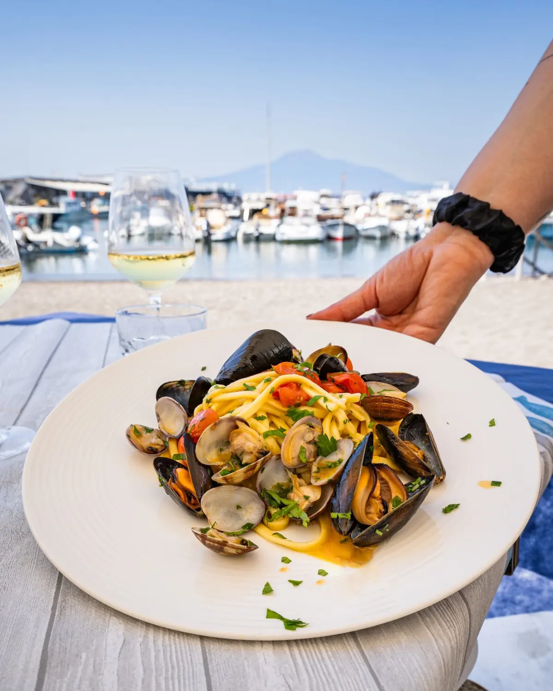

Spaghetti a vongole e cozze, con il porto alle spalle.

Ristorante, pizzeria e bar · Seiano, Vico Equense
TigabelasSeiano
Ristorante, pizzeria e bar a Seiano, in Via V. Marina Aequa, 31.
4,3409 recensioni GoogleVia V. Marina Aequa, 31, 80069 Vico Equense, NA
I tavoli apparecchiati sul porto di Seiano.
Via V. Marina Aequa, 31, Vico Equense. 4,3 su 5 su Google, 409 recensioni.
Recensioni
Cosa dicono i clienti
4,3 su 5 · 409 recensioni su Google. Qui sotto alcune, riportate senza modifiche (i nomi sono abbreviati).
★★★★★
Mi sono imbattuto per caso in questo locale, “Tigabelas”, e sono rimasto davvero impressionato in positivo, sia dal cibo che dall'estrema cortesia del personale.
Un plauso speciale va al cameriere (se non ricordo male si chiama Daniele): si vede subito che è amato dalla clientela! È stato super cortese, attento e sempre disponibile, ci ha letteralmente coccolati per tutta la durata del pranzo rendendo l'esperienza ancora più piacevole.
Per quanto riguarda la cucina: cibo ottimo e porzioni decisamente abbondanti. Consiglio assolutamente di provare la caponata di mare (di cui vi allego la foto): davvero spaziale!
Tornerò sicuramente. Consigliatissimo!
★★★★
Se cercate un posto dove trascorrere una tranquilla e serena serata estiva, immersi nella magia della Costiera Sorrentina, consiglio senza dubbio Tigabelas. Situato letteralmente in riva al mare, nella splendida Marina di Seiano, regala un’atmosfera suggestiva e rilassante, in uno degli angoli più belli del mondo.
La pizza è davvero molto buona, preparata con ingredienti di qualità e grande attenzione alla tradizione locale. Ottimi anche gli antipasti: personalmente consiglio l’insalata di polpo, fresca e ben preparata. La scelta dei primi è volutamente limitata ai piatti del giorno; una caratteristica che interpreto come sinonimo di freschezza e cura nella selezione delle materie prime.
Da sottolineare inoltre la gentilezza e la disponibilità del personale, sempre attento e cordiale. Durante la settimana si trova generalmente posto senza difficoltà, mentre nel weekend è consigliabile prenotare, vista l’elevata affluenza.
Un locale che unisce buon cibo, accoglienza e una location semplicemente impagabile, con il mare a pochi passi dal tavolo e tutto il fascino della Costiera Sorrentina a fare da cornice alla serata
★★★★★
Pranzo vista mare alla portata di tutti!
Se vuoi mangiare bene in riva al mare senza dover spendere eccessivamente (e poter scegliere tra ricette di mare, monti, pizza) la location è carina e pulita, il servizio ottimo,sono stati tutti gentili, abbiamo chiesto di aprire l’ombrellone sono per noi e la sig.a Michela è stata subito disponibile ad aprirlo e spostarci il tavolo, oltre ad averci anche proposto il tavolo interno. Sia i primi che la tagliata di carne erano buoni, porzioni abbondanti. Ottimo il rapporto qualità prezzo! Bravi e grazie! Ci ritorneremo con piacere!
★★★★★
Cena fantastica sul mare.
Il cibo era davvero delizioso e soprattutto il pesce ben cucinato e fresco. Abbiamo ordinato un antipasto misto, primo di pesce molto buono con cottura perfetta, poi abbiamo assaggiato pesce spada, gamberi, calamaro arrostito, e per finire delizia a limone..che dire tutto davvero saporito e cucinato a regola d’arte! Valore aggiunto la location in riva al mare, con un atmosfera molto intima e rilassante.
Consiglio assolutamente!
★★★★★
Esperienza da 10 e lode. Pizza a metro superlativa, consiglio la Francescana (che ha riscosso un grandissimo successo alla recente festa di Pizza a Vico) e la Nerano. Ma non fermatevi qui, perché Tigabelas è una garanzia su tutti i fronti: dagli scialatielli allo scoglio, al calamaro alla brace, alle polpette di melanzane (le migliori in assoluto che io abbia provato), alla delizia al limone. Servizio professionale ed attento. Location suggestiva, nella splendida cornice della Marina di Seiano. Il padrone di casa, Giancarlo, vi conquisterà con la sua affabilità e la passione per la sua terra. Tigabelas per sempre, tappa fissa e luogo del cuore.
Orari e dove siamo
Vieni a trovarci
| Lunedì | 08:00–24:00 |
|---|---|
| Martedì | 08:00–24:00 |
| Mercoledì | 08:00–24:00 |
| Giovedì | 08:00–24:00 |
| Venerdì | 08:00–24:00 |
| Sabato | 08:00–24:00 |
| Domenica | 08:00–24:00 |
Tigabelas, ristorante, pizzeria e bar Seiano
Via V. Marina Aequa, 31, 80069 Vico Equense, NA
081 8028 502
Orari della scheda Google: nei festivi possono cambiare, chiamateci per conferma.
Via V. Marina Aequa, 31, 80069 Vico Equense, NA
Contatti
Scrivici
Un messaggio su WhatsApp, o una telefonata: vi risponde Tigabelas.